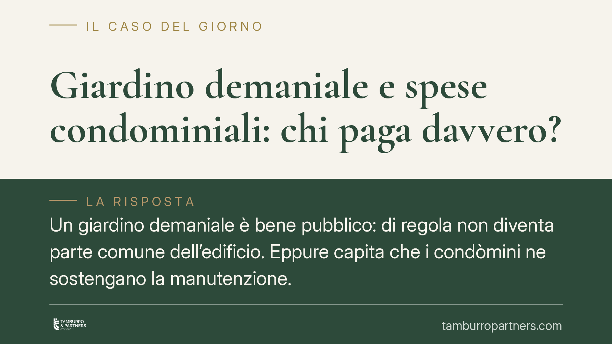

Giardino demaniale e spese condominiali: chi paga davvero?
Un giardino demaniale è bene pubblico: di regola non diventa parte comune dell'edificio. Eppure capita che i condòmini ne sostengano la manutenzione. La domanda è una: a quale titolo? Distinguere tra proprietà condominiale, area data in concessione e spazio aperto alla collettività è decisivo per capire chi paga, ed evitare delibere impugnabili.

Il caso
La questione è ricorrente negli edifici urbani: un'area verde adiacente al fabbricato appartiene al Comune, ma viene curata e utilizzata di fatto dai condòmini. L'amministratore inserisce a bilancio le spese di manutenzione del giardino e le ripartisce in tabella. Alcuni condòmini contestano: perché dovremmo pagare per un bene che non è nostro?
La risposta non sta nel «decoro architettonico», come talvolta si legge, ma nella natura del bene e nel titolo che ne legittima l'uso.
Inquadramento normativo: perché il demanio non è parte comune
Il giardino demaniale è bene pubblico ai sensi degli articoli 822 e seguenti del Codice civile. In quanto tale è, di norma, inalienabile e non usucapibile: non può entrare nelle parti comuni elencate dall'art. 1117 c.c. per il solo fatto di trovarsi accanto all'edificio o di valorizzarlo esteticamente.
Qui sta l'equivoco da sciogliere. Il decoro architettonico (rilevante agli artt. 1120, 1122 e 1138 c.c.) è un *limite* alle innovazioni e alle modifiche delle parti comuni. Non è, e non può essere, il *titolo* che fonda l'obbligo di pagare la manutenzione di un bene altrui. Affermare che «la spesa è dovuta perché l'area contribuisce al decoro» è un salto logico: si confonde un limite con un fondamento.
L'art. 1123 c.c. disciplina la ripartizione delle spese tra condòmini, di regola in base ai millesimi di proprietà. Ma presuppone che la spesa riguardi un bene comune o un servizio comune. Su un bene demaniale questo presupposto manca, salvo che esista un titolo che colleghi quel bene al condominio.
Le tre situazioni da distinguere
Per impostare correttamente il riparto occorre qualificare l'area.
a) Area di proprietà condominiale. Se il giardino è realmente parte comune (acquisito al condominio, risultante dai titoli), le spese seguono l'art. 1123 c.c., in proporzione ai millesimi o all'uso.
b) Area demaniale data in uso al condominio. È l'ipotesi più frequente e più fraintesa. Il bene resta del Comune, ma un titolo — concessione d'uso, convenzione urbanistica, comodato, asservimento — ne attribuisce il godimento ai condòmini. In questo caso gli oneri di manutenzione gravano sul condominio *nei limiti e secondo le modalità previste dal titolo stesso*. Non per il decoro, ma per il contratto o il provvedimento concessorio.
c) Area pubblica aperta alla collettività. Se lo spazio resta a fruizione pubblica e non è stato dato in uso esclusivo al condominio, le spese restano in capo all'ente locale. La cura di fatto da parte dei condòmini non genera, da sola, un obbligo contributivo.
Una pronuncia che attribuisse genericamente alla Cassazione il principio «si paga quando contribuisce al decoro», senza estremi verificabili (sezione, numero, anno), va trattata con cautela: in assenza del riferimento puntuale, è più corretto ragionare sui principi consolidati sopra esposti.
Implicazioni pratiche
Per amministratori e proprietari il punto operativo è uno: prima di deliberare o contestare una spesa sul verde demaniale, occorre individuare il titolo. Senza titolo, non c'è obbligo; con un titolo, l'obbligo ha la portata che il titolo gli assegna, non quella che l'assemblea decide di dargli.
Una delibera che ripartisca spese su un bene demaniale privo di titolo è esposta a impugnazione per difetto del presupposto. Specularmente, un condòmino che si rifiuti di pagare oneri previsti da una concessione regolare rischia di soccombere.
Cosa fare in concreto
- Verificate la natura dell'area: catasto, atti di provenienza e mappe per stabilire se sia condominiale, demaniale o pubblica aperta.
- Recuperate il titolo: cercate concessione, convenzione, comodato o atto di asservimento che leghi l'area al condominio e leggetene le clausole sugli oneri.
- Allineate il riparto al titolo: applicate l'art. 1123 c.c. solo a parti comuni; per il bene concesso seguite le modalità del provvedimento.
- Documentate in assemblea: mettete a verbale la qualificazione del bene e la fonte dell'obbligo, così da rendere la delibera coerente e meno impugnabile.
Contributo informativo a cura di Tamburro & Partners - Avv. Giuseppe Tamburro. Non costituisce parere legale.
Ogni condominio ha una storia a sé.
Se gestisci un'amministrazione e vuoi un confronto su una specifica questione condominiale, scrivi allo studio. Ti rispondiamo entro un giorno lavorativo.